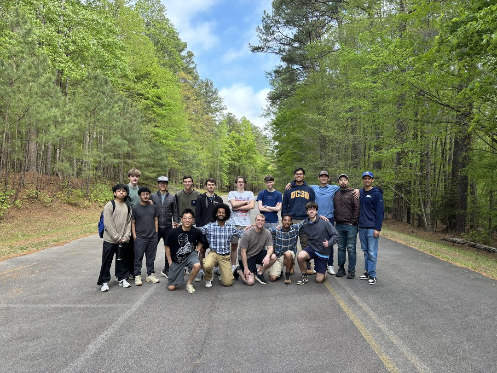
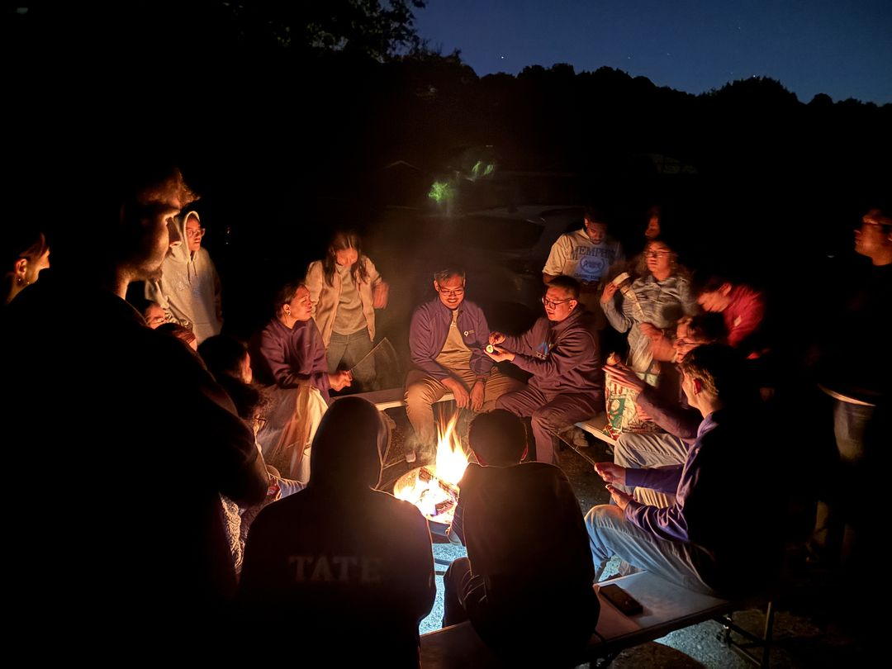

Hello World
Hi from Chapel Hill!
My name is Jonathan

the a2f blog

Hi from Chapel Hill!
My name is Jonathan

every Sunday
11:30 am
211 W Cameron Ave, Chapel Hill
this week at NC State
Bible studies + food
Times and rooms are posted on @a2fncsu.